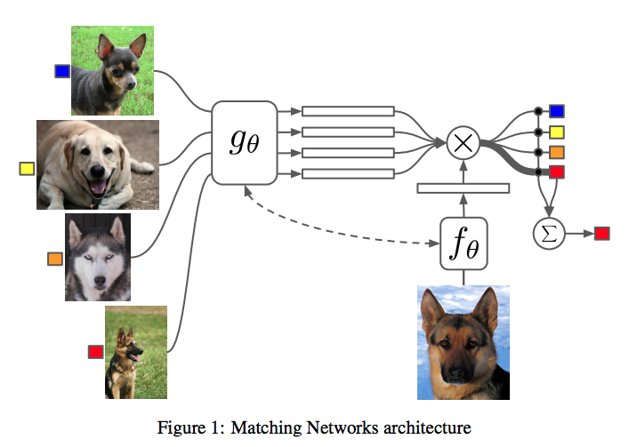
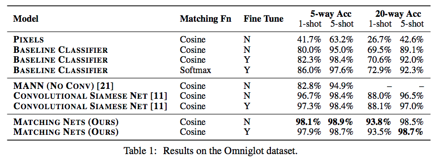
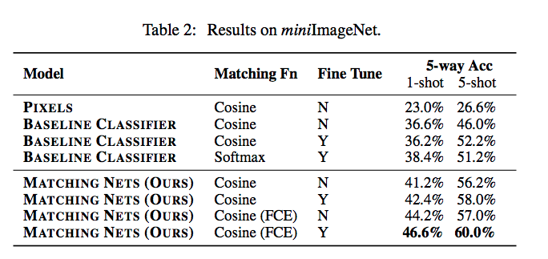
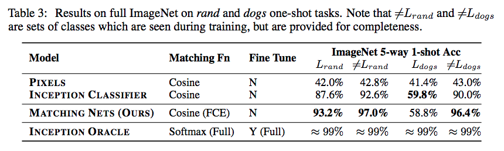

论文：Matching Networks for One Shot Learning
作者：Oriol Vinyals，Charles Blundell，Timothy Lillicrap，Koray Kavukcuoglu，Daan Wierstra
Motivation
人类可以从很少的样本学到新的概念，比如一个小孩在书上看了长颈鹿的图片，之后见到一个动物就可以判断出它是不是长颈鹿。对之前从未见过的类别，如何能让模型从一个标注样本中快速学会识别新类，就是One-shot learning问题。
论文基于 metric learning和用external memories增强模型两种方法，将训练集组织为 support set + test example 的形式输入模型，类似于测试时的输入，support set里都是带标签图片，test example无标签，support set里只有一张图片和test example类别相同，训练的目标是将test example划分到正确的类。
深度学习方法是参数模型，论文认为深度学习方法需要大量标注数据且学习速度慢是因为其参数性，模型需要慢慢把训练样本的知识学进参数里；与参数模型相对比的非参数模型，能够把新样本快速归类，而且不会忘掉之前学到的知识，比如nearest neighbors方法，不需要任何训练，但性能依赖于metric的选择。论文的目的是结合参数模型和非参数模型的特点，让模型既能快速从新样本中学习，又能在通用样本上有很好的泛化性能。
Novelty
- 提出基于attention 和 memory 的 Matching Nets (MN)，能够从少量新样本中加快学习；
- 在训练方法上将训练输入数据组织成测试时的形式，即support set + test example，让训练过程模拟测试环境来。
Model
作者从sequence to sequence with attention，memory networks 和 pointer networks中受到启发，这些方法用attention机制将有用信息存储在memory matrix中，也就是对P(B|A) 进行建模，A 和/或 B 在seq2seq模型中是sequence，在本论文中是set，相当于把one-shot learning 问题装进了set-to-set 的框架。

我们希望给定一个包含 $k$ 个带标签样本的support set $S={(x_i, y_i)}_{i=1}^k$ 和 一个无标签的test example $\hat x$ , 分类器能将 $\hat x$ 划分到 $y$ 的某一类 $\hat y$ 中，$\hat x$ 的类别预测结果就是 $P(\hat y|\hat x, S) = arg max_y P(y|\hat x, S)$ ，所以模型就是对 $\hat y$ 建模：
$x_i$, $y_i$ 是support set $S$ 里的标签已知样本，$a$ 是attention kernel 。上式可以看作是support set中所有label的线性组合。 对于离 $\hat x$ 最远的 $b$ 个 $x_i$， $a(\hat x,x_i) = 0$ 。
对上式的理解有两种方式：
（1）可以看作是 带attention的’k-b’-nearest neighbours ，是KDE和KNN的结合；
（2）如果把 $y_i$ 当作和 $x_i$ 有关的 memories，上式可以理解为是一种associative memory，当给定一个输入，我们根据记忆指出它是哪一类。和其他attentional memory mechanisms不同的是这个模型本质是非参数的。
Attention Kernel $a$
$a(\hat x,x_i) $ 的训练是先对 $\hat x$ 和 $x_i$ 分别用CNN进行embedding得到 $f(\hat x)$ 和 $g(x_i)$ ，论文中$f()$ = $g()$ ，然后做内积得cosine 距离 $c(f(\hat x), g(x_i))$ ，也就是Matching Networks的 “Matching”，再加一个softmax：
训练策略
对one-shot learning的训练集，从中选出Label set $L$，如 $L=$ {cats, dogs}，然后基于 $L$ sample 出 support set $S$ 和 一个batch $B$ , $S$ 和 $B$ 都带标签，Matching Net 学习目标是最小化 batch $B$ 的预测误差。
实验
作者在视觉任务和语言模型上都做了实验，在Omniglot 数据集上的结果比用Siamese Net做one-shot learning的结果更好：


